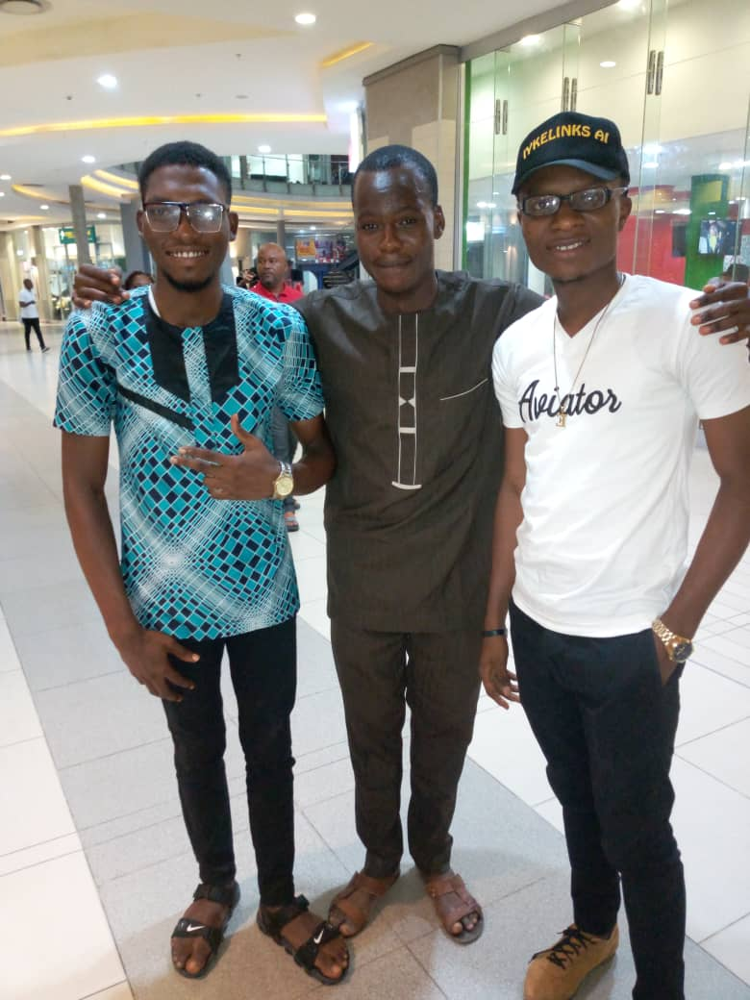
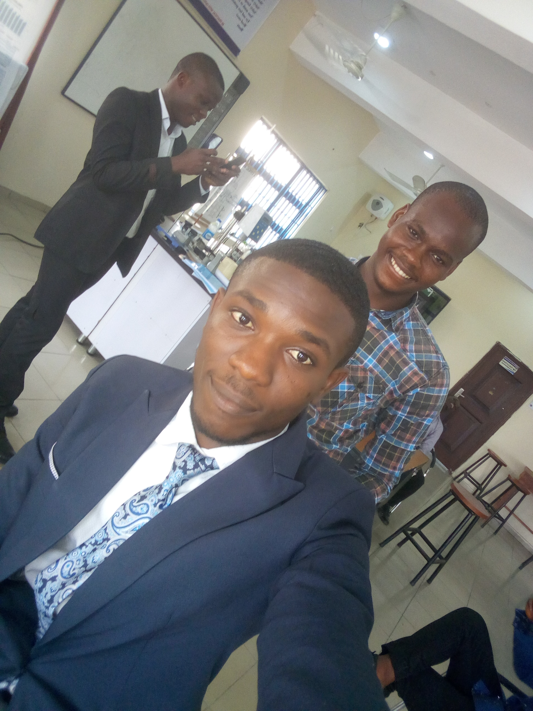
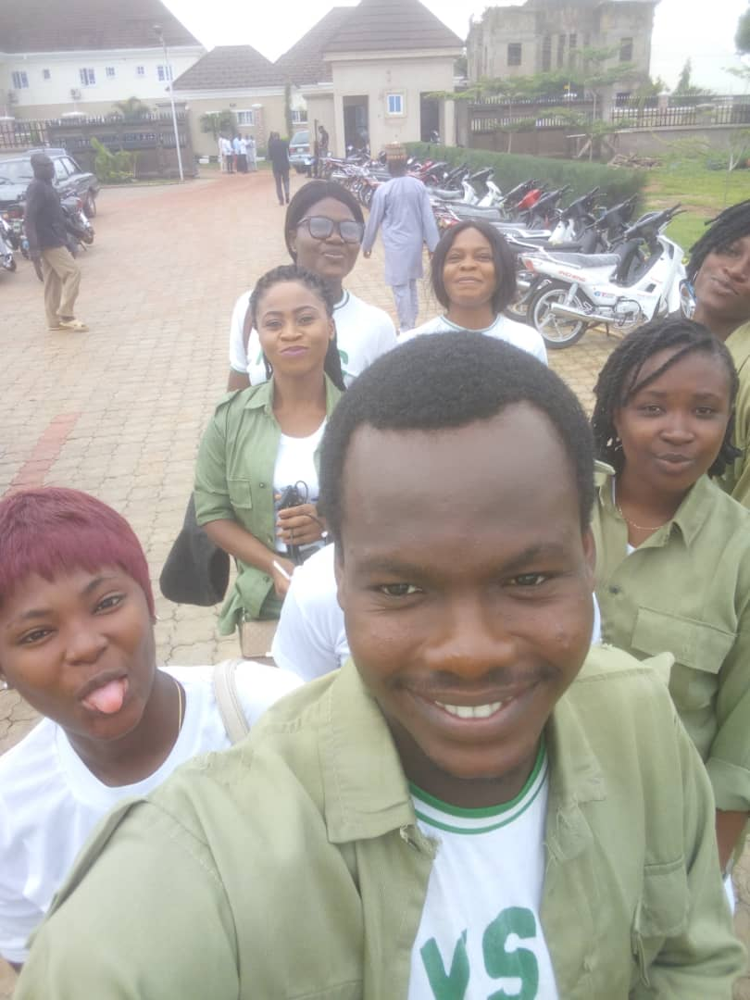
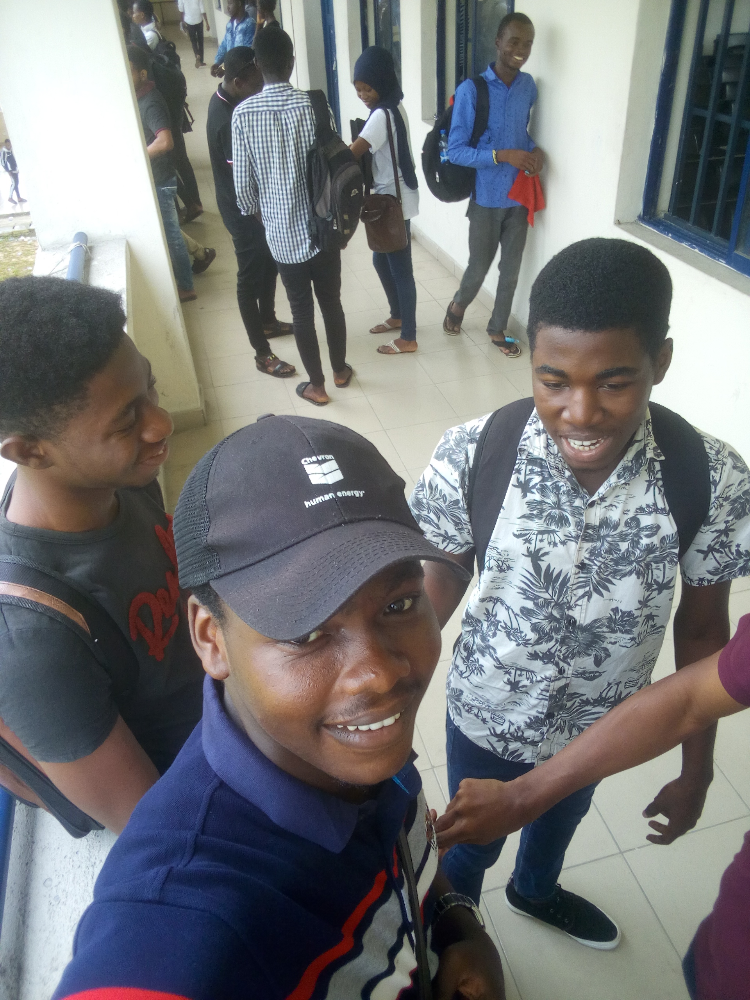

PERSONAL DETAILS
Name: Aja Ukpa Nnaemeka
Date of Birth: 18th January, 1998
Contact Address: 1 Akinlakanu Crescent off Adeniyi Jones, Ikeja, Lagos State.
State of Origin: Ebonyi State
Email: ajahnnaemeka@gmail
Tertiary Education:
Federal University of Petroleum Resources, Second Class Upper 2014 - 2018
Secondary Education:
Juli Comprehensive College, West African Examination Council Certificate 2013
Folbim High School, Junior West African Examination Council Certificate 2007 - 2013
Primary Education:
Eterland Nursery and Primary School, Primary School Leaving Certificate
OTHER INFORMATION
Github:https://www.github.com/owner00
Mobile: +234 810 095 8505
PHOTO GALLERY
After a successful Dissertation defense
With my colleagues as we discuss our future and national issues
Myself and my closest friends as we prepare for presentations
The Editorial Community Development Group attending a National awareness program
Back in the University with my close friends after a lecture
PORTFOLIO
Completed the Java Programming and Software Engineering Specialization offered by Duke University offered by Coursera
Built a Movie Recommender System in Java
Designed the User Interface of a Pharmacy
Cloned the Register page of the Piggyvest website
Developed several console applications in the C# programming languages
Built basic Android applications
WORK EXPERIENCE
Warri Refinery and Petrochemical Company Ltd.
Plant Operator
06/2017 - 12/2017
Carry out routine downtime activities : Compressor barring, backflushing of trim coolers, valve greasing, air cooler status checks, stroking of pneumatic valves, pressurization & preservation of vessels.
Monitoring the operations of other units in the production plant Transfer of caustic soda to Oil Movement department
Ensure personal & site safety
Collection of product samples for laboratory analysis
Ministry of Science & Technology, Nasarawa State.
ICT Operator
04.2019 – 10.2019
Responsible for production of Microsoft Office documents and common ICT tasks Tasked with running errands from superiors
Ministry of Education, Nasarawa State.
Office Staff
11.2019 – present
Tasked with routine duties,office maintenance, information relay between guests and my direct superiors
FIELD EXPERIENCE
Petroleum Training Institute
View of the drilling rig & its components
Overview of the drilling process
Platform Petroleum Limited
Process flow of the crude oil & gas processing facility The importance of plant Health, Safety & Environment
Nigerian Port Authority
Overview of the port as an important means of crude transportation
Editorial Community Development Service
Visited a federal school alongside colleagues informing students about female child violence
Weekly peer discussions concerning important socio-cultural issues A visit to the state owned Nasarawa Broadcasting Service
Member of the electoral committee
Team PETROBOWL FUPRE, SPE Students Technical Symposium & Exhibition 2018
Tasked with the study and responses to Drilling Engineering, HSE and General Petroleum Engineering questions.
EDUCATION
Federal University of Petroleum Resources
Bachelor of Engineering, Petroleum Engineering 2014-2018
Taught Material Balance Equation, Formation Evaluation, Casing Design & Selection, Engineering Economics.
AWARDS
AGBAMI Medical and Engineering Professionals Scholarship Award
DISSERTATION
Enhancing Gas Well Deliverability using Compression by application of PROSPER software
LEADERSHIP
Program Chair, Society of Petroleum Engineers FUPRE Chapter
Working with the leadership to plan & develop effectual programs and assist in their actualization.
In-house Executive, Nigerian Christian Corpers Fellowship Nasarawa Secretariat.
Functioned as a unit head; concerned with the orderliness, chapel sanitation, sales of materials, and the management of individuals for the fulfillment of given directives.
Promoting effectual work distribution & collaboration within the unit.
HOBBIES
Software Development. Drawing. Chess. Learning fundamentals. Acquiring Skills
REFERENCES
Wilfred Okologume,
Head of Department,
Federal University of Petroleum Resources
Okologume.wilfred@fupre.edu.ng
+234 803 716 2095
Mr. Bright Atsagbiade
Panel Operator,
Warri Refinery & Petrochemical Company Ltd.
+234 816 392 3231